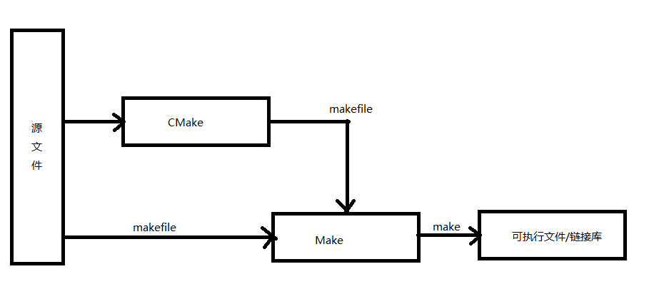

OpenGL渲染器02_C++环境
目标
- 使用CMake+MinGW搭建C++编译环境。
- 使用CLion搭建C++开发环境，实现C++程序开发、生成、编译、运行；
构建和编译
C++源码“转译”为机器语言，就是编译过程。最常用的编译器是GNU的C/C++编译器。也就是gcc/g++。
如果我们要编译和运行C++程序，下载安装g++后：
# 编译
g++ -c filename.cpp
但是，当源码文件数量太多，还有加入第三方库和链接的时候，这个就很麻烦了。任何一个项目，除了写代码外，就是代码的管理和组织，我们不会把所有内容放在main.cpp一个文件中。因此需要一个工具帮我们完成构建、链接和生成可执行程序、生成动态链接库、生成静态链接库等。有一个方案就是使用CMake和MinGW来完成这些事情。
CMake-构建、生成
CMake是一个跨平台的构建工具，可以用简单的语句描述所有平台的编译过程。我们配置好一个CMakeLists.txt的文件，CMake根据这个文件生成各个平台的Makefile，然后由编译器处理对应Makefile。
具体CMakeLists.txt怎么写，可以参考https://blog.csdn.net/afei__/article/details/81201039。
不过可以通篇浏览一遍，然后用到了再查，用多了就熟了。
CMake和Makefile什么关系？
CMake在Makefile的上层，CMake中会写清楚项目中代码和代码间的关系，描述文件之间的依赖关系。CMake安装（下边会介绍安装过程）完成之后，打开 cmake-gui.exe，我们看到可以生成各种Makefile。
CMake-Make流程： 
安装
下载地址：https://cmake.org/download/
选择版本：3.0以上，我这里是3.12.2
下载完成后，解压到指定目录，并添加bin目录到环境变量。
验证是否配置成功：
cmake --version
MinGW-编译
MinGW的全称是Minimalist GNU on Windows，是将开源的gcc/g++移植到了Windows平台下，也就是C/C++编译器gcc的Windows版本。不过其他系统Linux、Mac在社区上也有对应的一些版本，同样可以使用。
为什么使用MinGW
MinGW主要有以下特点：
- 开源免费；
- 社区活跃，持续维护；
- 支持最新C语言标准；
- 编译后程序不需要第三方dll，可以直接在windows下运行。
安装
下载地址： https://sourceforge.net/projects/mingw-w64/files/
选择版本：8.1.0
根据系统分类，选择下载 **[MinGW-W64-install.exe](https://sourceforge.net/projects/mingw-w64/files/Toolchains targetting Win32/Personal Builds/mingw-builds/installer/mingw-w64-install.exe)**执行程序或者[x86_64-posix-seh](https://sourceforge.net/projects/mingw-w64/files/Toolchains targetting Win64/Personal Builds/mingw-builds/8.1.0/threads-posix/seh/x86_64-8.1.0-release-posix-seh-rt_v6-rev0.7z)离线包。
注，一定要下载posix-seh版本。对于MinGW各个版本的区别，参考：https://www.pcyo.cn/linux/20181212/216.html
我这里选择的是： posix、seh
如果下载的是exe，安装时会下载包，版本选择如图：
解压完毕之后，跟CMake一样配置Path环境变量。
然后输入以下命令检验是否安装成功：
gcc --version
g++ --version
mingw32-make --version
MinGW生成编译C++程序
创建一个文件夹，test01，并添加CMakeLists.txt文件。
# 版本号限定 可选
cmake_minimum_required(VERSION 3.0)
# 项目名称
project(test01)
# 源码
set(SOURCE main.cpp)
# 可执行文件
add_executable(${PROJECT_NAME} ${SOURCE})
添加main.cpp文件
#include <iostream>
int main(){
std::cout<<"Hello World!"<<std::endl;
return 0;
}
构建和编译，可选命令行方式，或者是GUI可视化操作方式两种。
使用命令行
在test文件夹下，打开cmd，执行以下命令：
mkdir build
cd build
cmake -G "MinGW Makefiles" ../
mingw32-make
执行完成之后，如果一切正常，在build目录下会生成可执行文件，运行测试。
./test01.exe
Hello World!
使用CMake GUI
前往%CMake_Home%/bin, 打开cmake-gui.exe。或者命令行输入：
cmake-gui
IDE
编辑器种类较多，抛开环境和个人习惯来选IDE就是耍流氓，无法对比出编辑器的好用与否，根据每个人开发习惯选择即可。
说到编辑器，其实文本编辑器也行，打开记事本一顿猛如虎的操作之后，g++编译和运行就可以。但是，当源文件很多时候或者需要很多第三方库链接进来，记事本的效率就太低了，而且容易出错。因此，需要集成开发环境IDE。
主流的C++ IDE：
- Visual Studio，微软开发的功能特别强大的代码编辑器，我看现在最新的版本已经是Visual Studio2022了，Windows环境下推荐选择。官网地址：https://visualstudio.microsoft.com/zh-hans/vs/
- Visual Studio Code，微软开发的跨平台免费源代码编辑器，支持很多种语言。官网地址：https://code.visualstudio.com/
- CLion，Jetbrains开发的跨平台编辑器，Jetbrains开发的工具我一直都挺喜欢用，同家族的Java Idea深受很多Java程序员的欢迎，好评如潮。官网地址：https://www.jetbrains.com/clion/
- Xcode，Mac环境一般用这个，或者上述的Visual Studio Code、CLion等。
- Eclipse CDT，跟Java的Eclipse 很像，不过跟CLion相比，代码补全提示方面还是有所差距。
所以：
- 如果是在Windows开发，可以选择Visual Studio、Visual Studio Code、CLion。
- 如果是Mac开发，可以选择Xcode、CLion。
- 如果是Liunx环境开发，可以选择CLion。
我选择使用CLion，原因是这几点：
- 个人原因。因为是Java背景，刚开始用Eclipse用习惯了，后来转用Idea，我快捷键映射还用的Eclipse那套，这样就很舒服，无需额外学习。
- CLion原生支持Eclipse、Windows、Emacs、Sublime Text、Visual Studio和自定义几套快捷键。
- 智能联想，CLion拥有强大的代码提示、搜索、自动折叠、高亮、自动补全、类型推断功能，重构也特别方便。
- 跨平台，Windows、Liunx、Mac都可以，如果到时候想用ubuntu开发，直接用就行。
CLion缺点，内存要求较高，目前只支持CMake构建项目。相比Visual Studio，功能的确少了很多。
综上，适合自己的就是最好的，顺手就行！
下边介绍下CLion的使用。
Clion
下载地址：https://www.jetbrains.com/clion/
根据自己电脑系统下载对应版本即可，然后一步步安装就可以。
在Clion中编译和构建
打开Clion，首先在【File】-【Settings】-【Build】-【Toolchains】添加MinGW的根目录，Clion会自动识别g++、gcc、make和gdb工具。
打开项目：【File】-【Open】，打开test01，等待CLion Load CMake完毕。
编译和运行
到此为止，我们成功在Clion中编译和运行了C++程序！
结语
其实C++程序倒是写了一些，但工具方面一直是模模糊糊，写这篇笔记之前测试过很多环境配置，也算更进一步的了解环境和工具吧。
- Author: xingchen
- Link: http://www.adiosy.com/posts/opengl_renderer/02_c++%E7%8E%AF%E5%A2%83%E6%90%AD%E5%BB%BA.html
- License: This work is under a 知识共享署名-非商业性使用-禁止演绎 4.0 国际许可协议. Kindly fulfill the requirements of the aforementioned License when adapting or creating a derivative of this work.

{kind=link}
{kind=link}
{kind=link}
{kind=link}
{kind=link}
{kind=link}
{kind=link}
{kind=link}
{kind=link}
{kind=link}
{kind=link}
{kind=link}
{kind=link}
{kind=link}
{kind=link}
{kind=link}
{kind=link}
{kind=link}